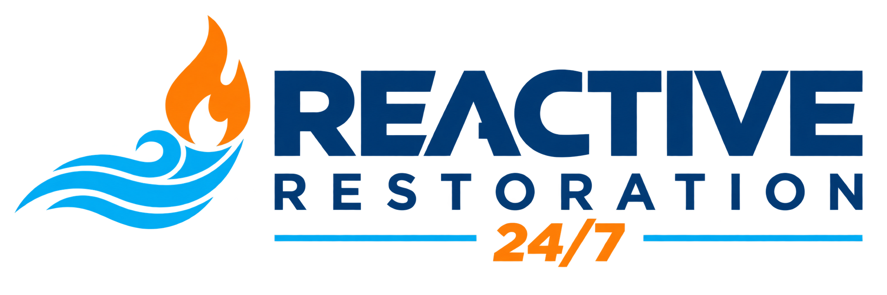

1. Loss Assessment and Containment
We identify affected materials, isolate high-risk zones, and control ongoing water migration.

From sudden flooding to hidden moisture spread, our team prioritizes fast extraction and controlled drying to reduce secondary damage and speed recovery.
We identify affected materials, isolate high-risk zones, and control ongoing water migration.
Standing water is removed quickly and humidity management begins immediately.
Drying plans are tracked over time to reduce hidden moisture and prevent microbial growth.
Damaged assemblies are restored with focus on safe occupancy and functional recovery.
As soon as possible. Early containment and extraction are key to limiting spread and secondary damage.
Yes. Uncontrolled moisture can create favorable conditions for mold, so drying and monitoring are critical.
Yes. Reactive Restoration Services supports residential and commercial recovery planning.
Start emergency response now or submit project details for a guided quote process.